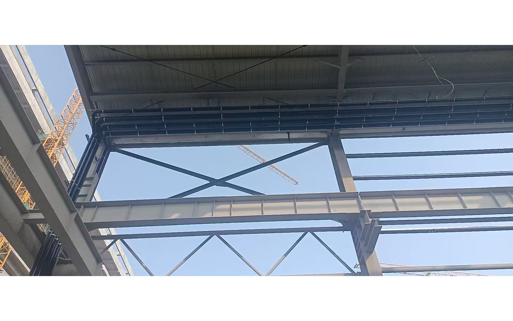
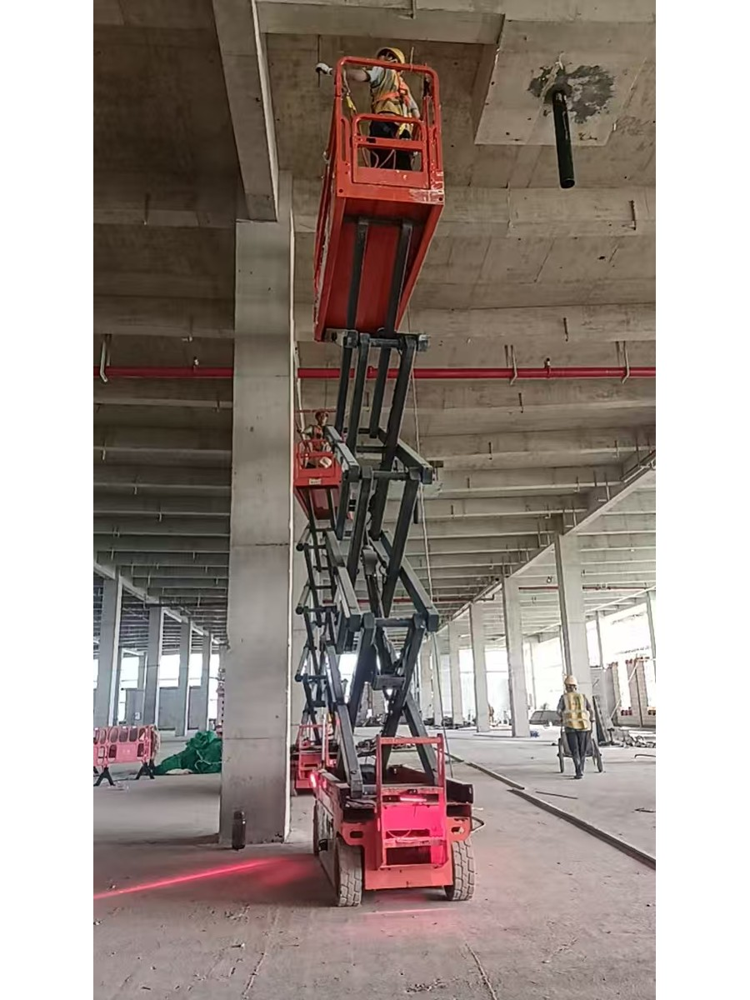

固威环保广州市固威环保科技开发有限公司
固威环保广州市固威环保科技开发有限公司建筑给排水
综合安装
01 / 项目介绍
建筑给排水综合安装，展示建筑内外管线、立管及支架固定方式，以及高空安装作业现场。


综合安装
现场管线布置
管道安装细节
02 / 管道布置
沿建筑结构布置管线，通过支吊架和管卡固定，衔接横向管段与竖向立管。
展示屋面及楼板下方的横向管段、转弯位置和支吊架布置。
展示建筑内外沿柱立管的走向、安装空间及下部管口。
展示管卡、支吊架与建筑结构之间的固定位置。
03 / 现场安装

现场使用高空作业平台，为屋面及楼板下方的管线安装提供作业位置。
横管、立管及固定支架结合梁、柱和墙体的位置布置，现场照片展示了管线走向与结构之间的关系。
结合建筑使用人数、排水去向和地下空间，沟通成品化粪池与排水管线的衔接。

根据使用人数、有效容积及项目设计要求选择规格。
结合进出水管标高、基础及检修口位置安排安装。
核对地下水位、地面荷载与维护空间，具体尺寸以确认后的产品图纸为准。
1. 建筑的用途和规模，需要配套哪些给排水系统。
2. 目前的设计或施工阶段，以及已有图纸和场地条件。
3. 您现在最想解决的问题是什么。
没有完整图纸或技术资料，也可以先说明已知情况。